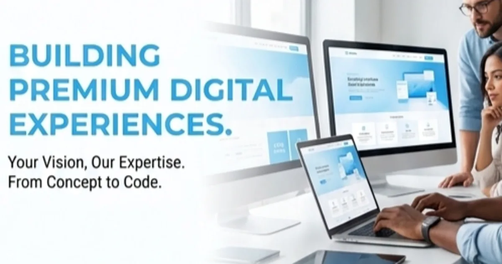

How to Turn a Reel Into a Lead-Generation Asset

A reel gets attention; the surrounding journey is what can turn that attention into an enquiry.
Short-form video is useful because it can communicate a problem, a result or a point of view quickly. But a view is not the same thing as a lead. The missing piece is usually the journey after the viewer becomes interested.
Begin with one audience problem. Instead of making a generic promotional reel, identify a situation your target customer recognises. A salon might address appointment drop-offs, a cafe might show how a new offer works, and a local service business might explain a common customer question.
Give the reel a simple structure: problem, useful insight, solution and one action. The action could be “Message us”, “See the full service”, “Book a consultation” or “Visit the website”. Avoid asking the viewer to do five things at once.
The creative should make the value understandable even when watched without sound. Use readable captions, a clear opening frame and visual movement that supports the message instead of distracting from it. Keep branding visible enough to build recognition without turning every second into an advertisement.
The landing destination should match the promise in the reel. If the video promotes a website service, the page should explain that service instead of sending people to a generic homepage with no context. The same principle applies to WhatsApp: prefill a short message that tells the team what the visitor is enquiring about.
Follow-up matters just as much as the click. A lead that receives a useful response quickly is more likely to continue the conversation. Create a simple internal process: record the enquiry source, respond, qualify the requirement, share the next step and mark the outcome. This keeps the content team and sales team connected.
Track what happens after the click. Even a simple spreadsheet can record the source, enquiry date, service, response status and outcome. Over time, this helps the business learn which topics and offers generate meaningful conversations rather than chasing views alone.
The offer should be specific enough that the viewer knows whether it is relevant. A vague line such as “We help businesses grow” can be difficult to act on. A concrete offer such as a website audit, consultation, menu promotion or service enquiry gives the viewer a reason to click now.
The profile also matters. A viewer who discovers a business through one reel may check the profile before clicking a link. Keep the profile description consistent with the offer, use a clear contact path and make sure the destination page works well on a phone. A broken or slow destination wastes the attention the reel created.
Creative testing should be treated as learning rather than a hunt for one viral format. Change one major variable at a time—opening hook, topic, proof, CTA or visual treatment—and compare the quality of resulting enquiries. A smaller number of relevant conversations can be more valuable than a large reach number with no business outcome.
There is also an operational limit: do not promise a response speed or result that the team cannot maintain. The strongest lead-generation system is one that the business can handle consistently. Content, landing pages, forms and follow-up should therefore be designed together rather than treated as separate marketing tasks.
A useful weekly review can be very small: which reels created qualified conversations, which CTA was used, what page people visited and where follow-up stopped. This turns content production into a repeatable system and helps the team spend more time on formats that support the actual business.